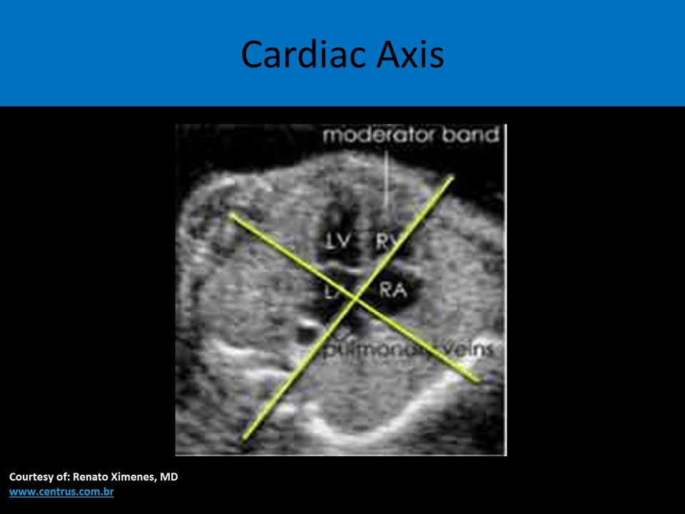
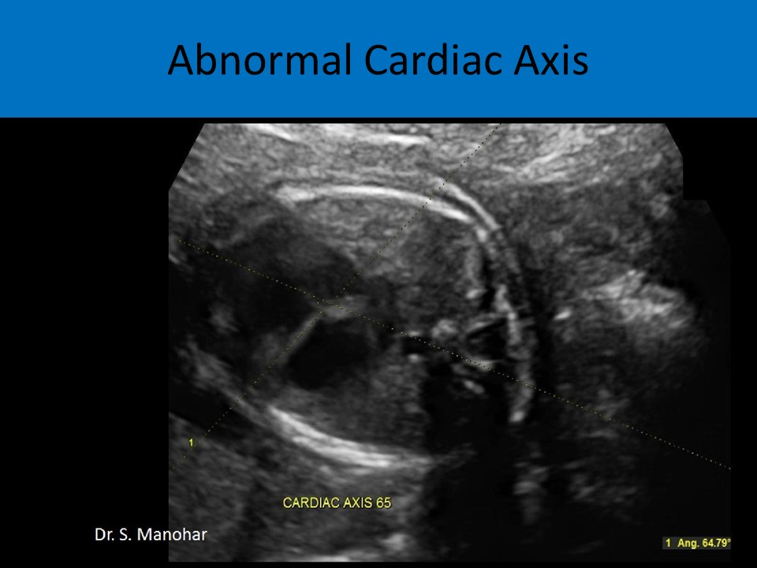
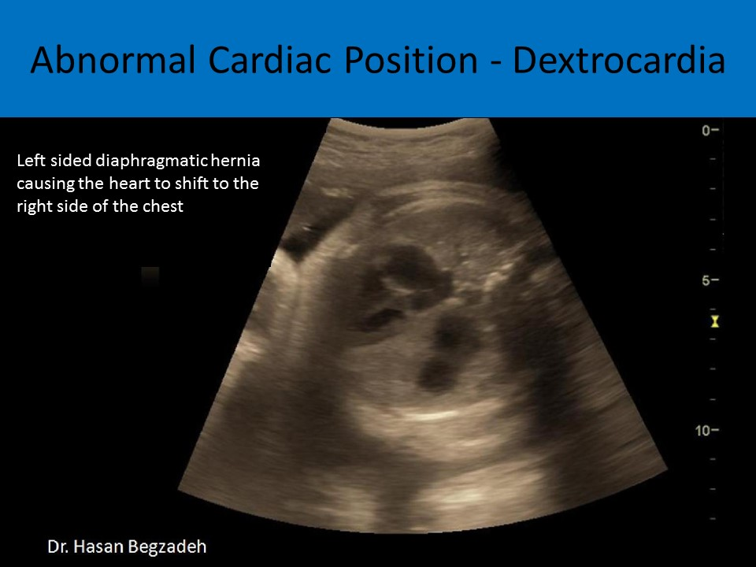
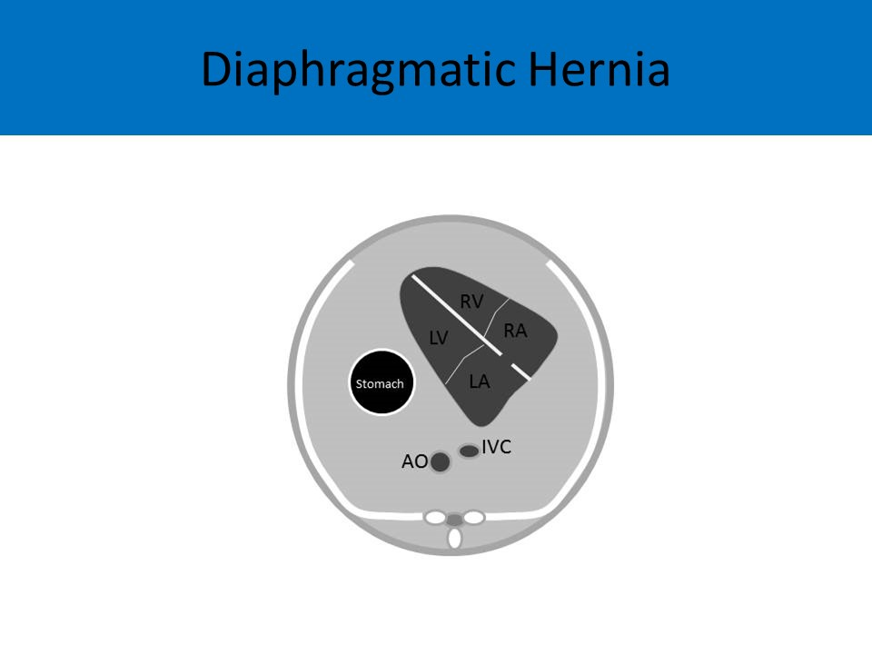
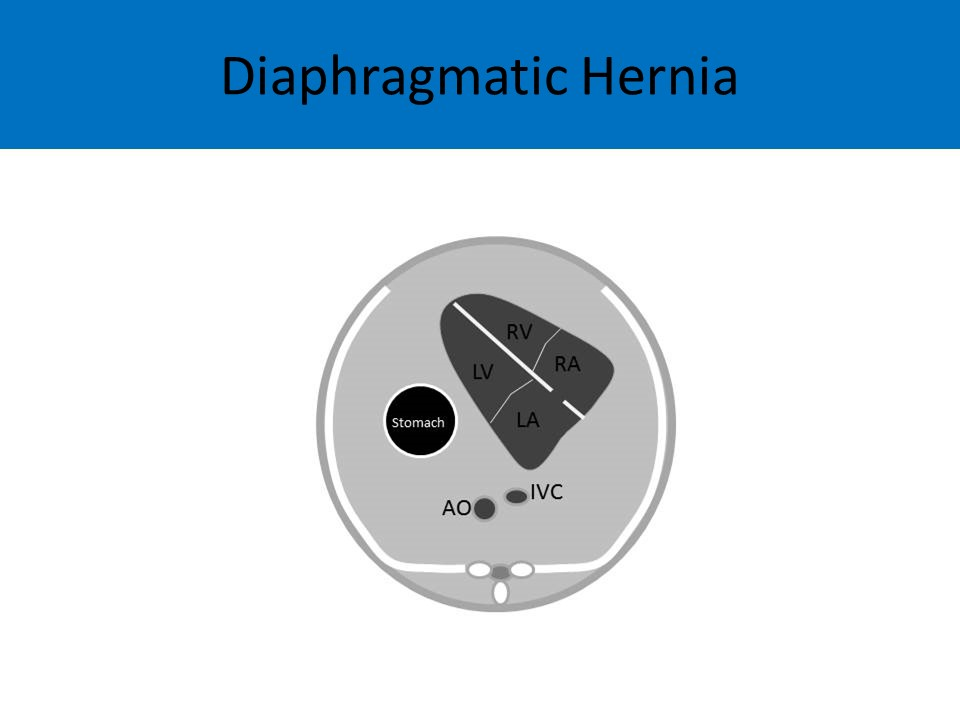
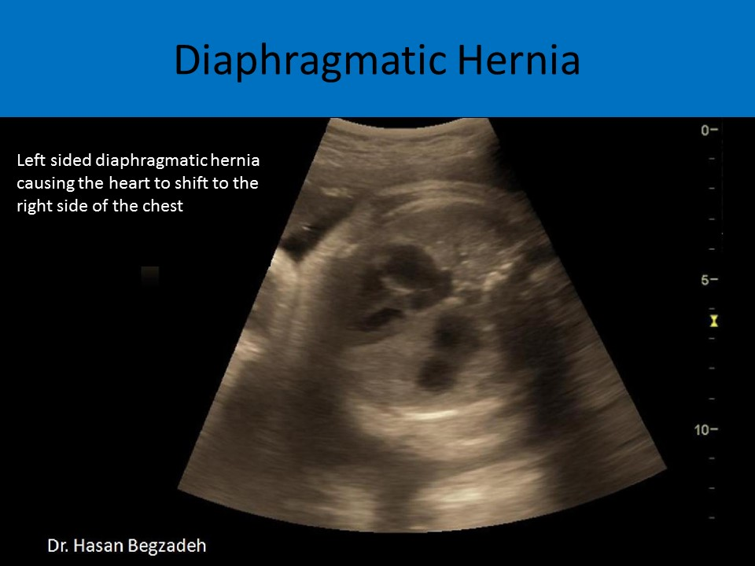
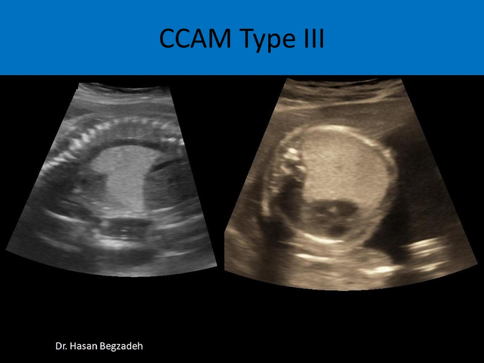
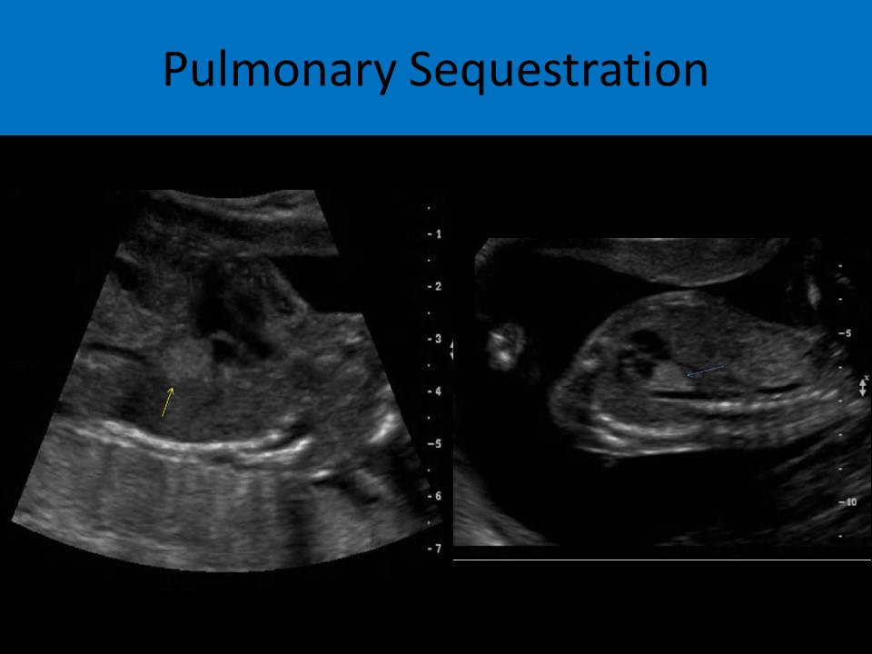
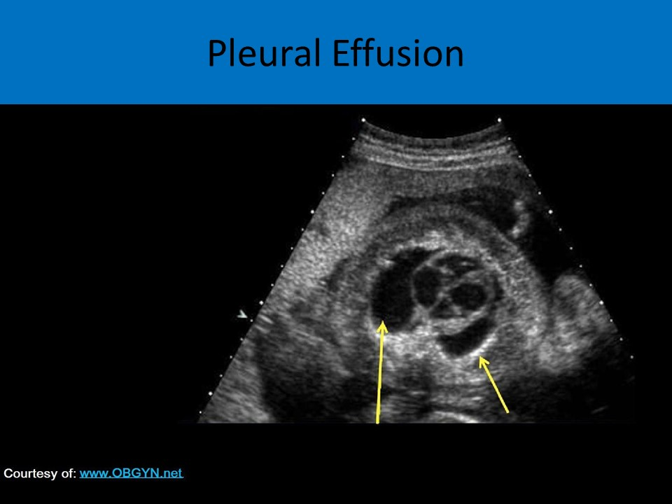
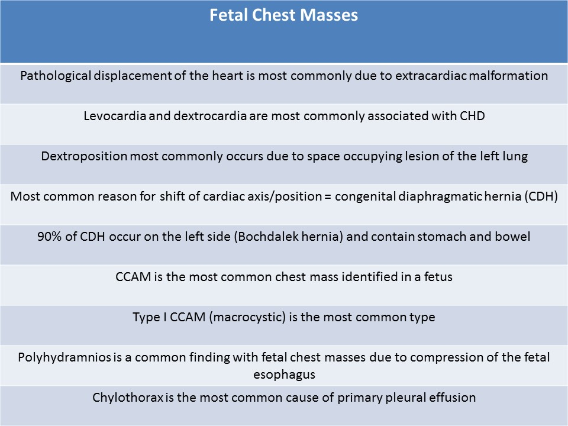

.jpg)
Malposition of the Heart
Cardiac Axis:
- Cardiac axis refers to the rotational orientation of the heart in the chest
- The cardiac apex points to the left
- The left atrium is the closest to the spine
- The right ventricle is the closest to the chest wall
- Cardiac axis can be determined with the four chamber view
- Draw a line from mid sternum to the spine that bisects the thorax; the cardiac axis is the angle between the interventricular septum and the line
- Normally most of the fetal heart is located in the left anterior chest quadrant
- Normal heart axis: about 45 degrees + or - 20 degrees
- Abnormal heart axis: < 25 degrees, >65 degrees
- Left cardiac axis deviation: COA, TOF, truncus arteriosus
- Right cardiac axis deviation: AVC, DORV, common atrium
- Omphalocele and gastroschisis are associated with abnormal cardiac axis
 
Cardiac Location and Apex Position:- Cardiac position refers to the position of the heart without association of cardiac axis
- Pathological displacement of the heart is most commonly due to extracardiac malformation
- Levoposition: the heart is located on the left side of the chest; normal position
- Dextroposition: functional dextrocardia, heart is located in the right side of the chest with the apex pointing to the left; usually occurs due to space lesion abnormality of the left lung (congenital cystic adenomatoid malformation, diaphragmatic hernia)
- Levocardia: the apex points toward the left side of the chest; normal position
- Extreme Levocardia: the heart is located very lateral on the left side of the chest; associated with CHD
- Dextrocardia: the heart is located in the right side of the chest with the apex pointing to the right, strongly associated with CHD
- Mesocardia: the heart is located in the middle of the chest with the apex pointing midline
- Fetal cardiomegaly: Ebstein anomaly/tricuspid dysplasia, fetal heart block, TTTS (recipient), AVC

Causes for Abnormal Cardiac Position:
Ectopia Cordis:- A congenital malformation where the heart is located outside of the chest
- Can be a part of Pentalogy of Cantrell: deficiency of the anterior diaphragm
- Types: Cervical, thoracic (most common), abdominal, thoracoabdominal
- Associated with TOF, DORV, diverticulum of the left ventricle
- Can be caused by amniotic band syndrome or limb body wall complex
- Usually occurs with other extracardiac defects; omphalocele is common, CNS abnormalities, cleft lip and palate
- Poor prognosis
Ectopia cordis
Chest Masses:
- When a chest mass is identified, it is important to evaluate the pregnancy for:
- Mediastinal shift
- AFI levels - most associated with polyhydramnios
- Signs of hydrops
- Malformation of the diaphragm allows the abdominal organs to push into the chest cavity, hindering proper lung formation
- Coronal views of the chest and abdomen are preferred to fully evaluate the entire width of the diaphragm
- Most common reason for shift of cardiac axis/position
- Bochdalek - posterior left lateral defect
- Morgagni - anterior right medial defect
- 90% occur on the left side (Bochdalek hernia) and contain stomach and bowel
- 50% of congenital diaphragmatic hernias are associated with other fetal defects
- 9-23% of patients with congenital diaphragmatic hernia have associated congenital heart defects
- The prognosis in cases of CDH with congenital heart disease is very poor
- Fetal stomach visible at the same level of the heart in a transverse or coronal view (left sided hernia)
- Left-sided diaphragmatic hernia displays the abnormal right heart position
- Usually on the left side - the left lung is hypoplastic and often left side of the heart does not develop
- Associated with left ventricular hypoplasia (often associated with hypoplastic left heart syndrome: left diaphragmatic hernia), lung hypoplasia
- Polyhydramnios is common due to obstruction of fetal digestive tract
- Can be associated with Trisomy 13, 18 and 21; also Turner syndrome
- An unknown diaphragmatic hernia can cause significant complications at birth
- If the lungs are not able to inflate properly or the heart is compressed by bowel in the chest cavity, the fetus can die soon after birth
- Overall mortality rate in fetuses with CDH is 70-80%
 


Congenital Cystic Adenomatoid Malformation:- Dysplastic cystic lung tumor due to developmental abnormality
- Most common chest mass identified in a fetus
- Usually unilateral but affects the entire lung
- Type I - macrocystic, 2-10cm cysts, most common type
- Type II - medium cysts, 1-2cm cysts
- Type III - microcystic, 0.3-05.cm cysts
- Type I and II demonstrate single or multiple cystic structures within chest cavity replacing normal lung tissue
- Type III demonstrates microscopic cysts that cause an overall increase in echogenicity of the affected lung tissue (similar to the changes in the kidney echogenicity caused by the tiny cysts with autosomal recessive polycystic disease)
- Type III is associated with fetal hydrops and demise
- Microcysts cause increase in echogenicity of lung tissue
- Macrocysts can be seen as multiple round, anechoic areas within the lung tissue, usually greater than 2cm
- Grows larger and occupies thoracic space
- Heart is displaced to the contralateral side of the chest
- Can lead to compression of the heart and fetal hydrops
- Mass effect can flatten or invert the diaphragm
- Inferior vena cava is an important structure to evaluate with suspected CCAM
- While the heart is pushed over due to CCAM, the inferior vena cava is distorted and abnormally positioned in relation to the right atrium
- Polyhydramnios is seen with most cases
- MRI is the alternative way to evaluate CCAM and cardiac consequences

Congenital Cystic Adenomatoid Malformation: right sided CCAM and the heart is pushed to the left side of chest
Congenital Cystic Adenomatoid Malformation
Bronchopulmonary Sequestration:
- Mass of nonfunctional lung tissue that does not communicate with the bronchial tree
- Has separate blood supply from the aorta
- May regress
- Appears as an echogenic, triangular shaped mass in fetal chest
- Differentiated from other fetal chest masses by using color Doppler to identify the feeding artery from the aorta

Pleural Effusion:
- Fluid in the lung cavities
- Can be bilateral or unilateral
- "Bat wing" sign used to describe unilateral effusion
- Can be associated with hydrops
- Chylothorax
- Most common cause of primary pleural effusion
- Collection of lymphatic fluid
- Caused by interrupted development of the thoracic duct
- Usually unilateral and on the right side
- Can cause a mediastinal shift

